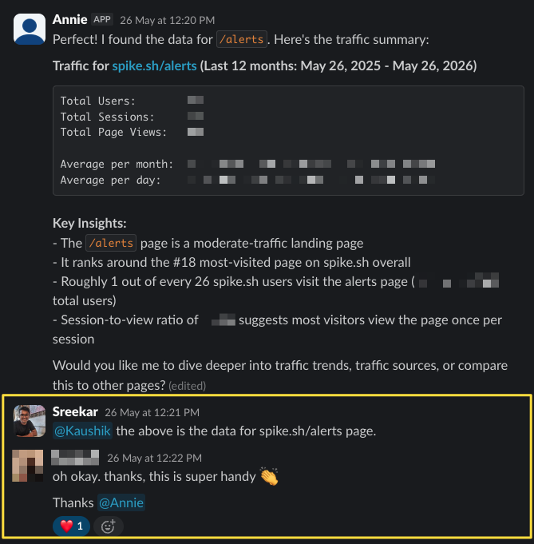
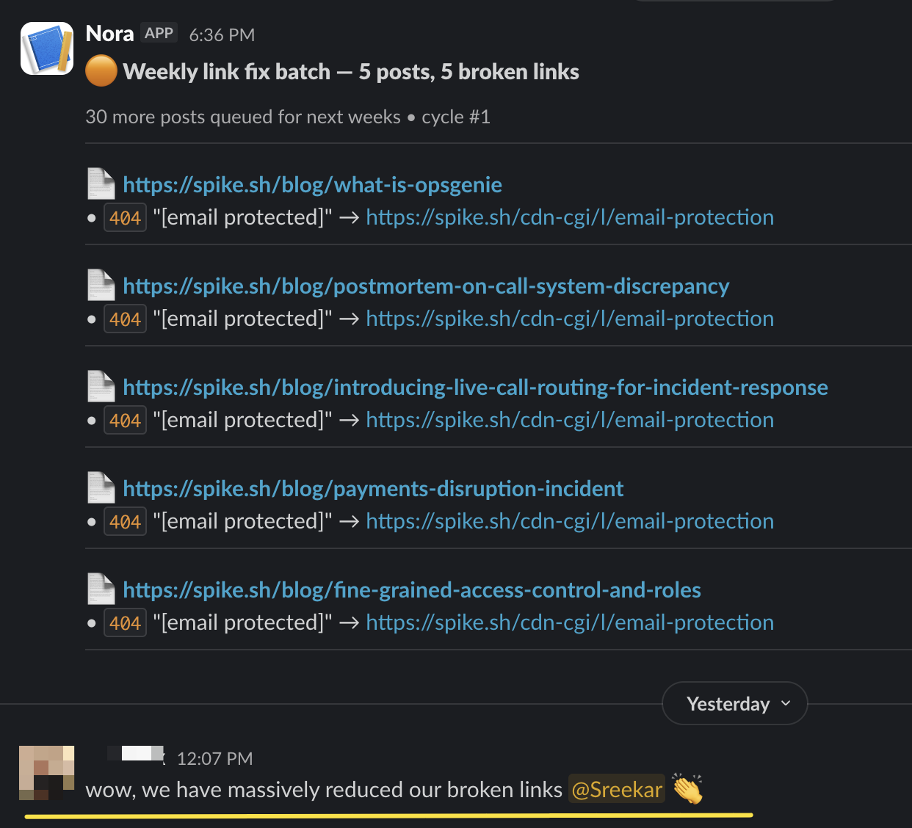
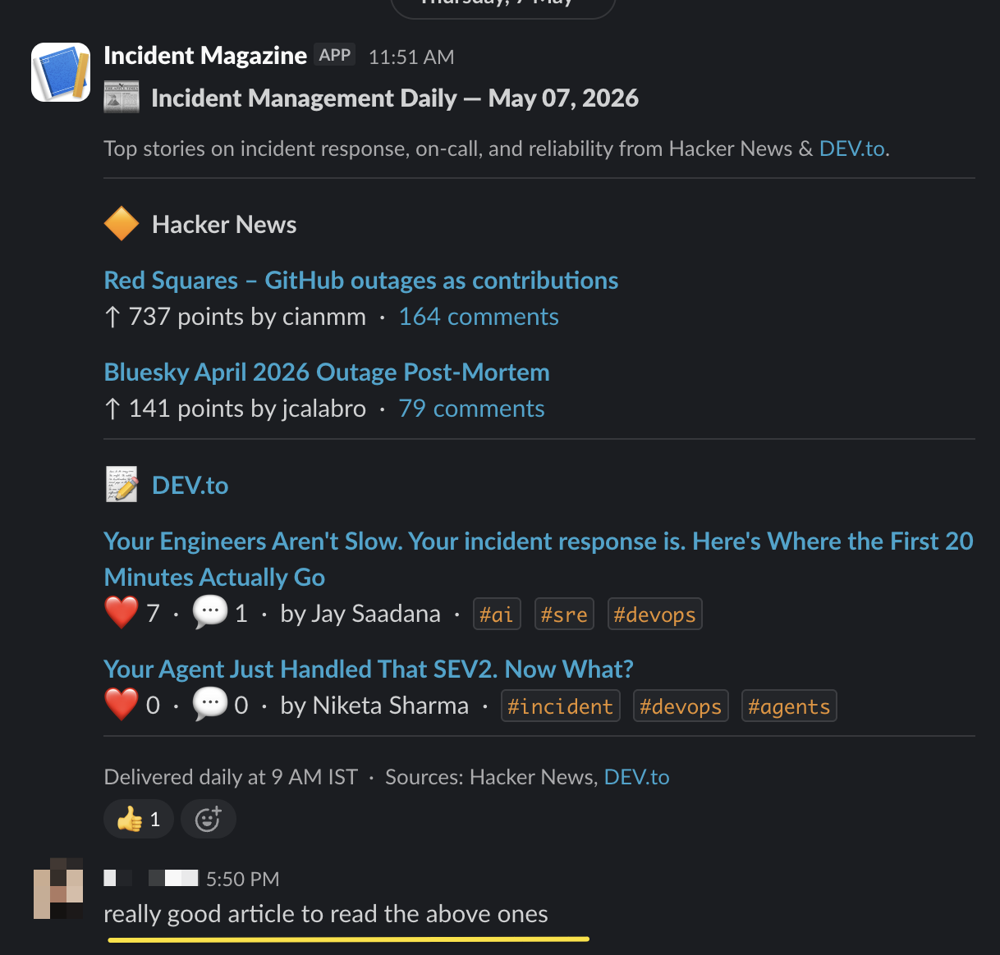

Case Study 02 · Spike · AI + Marketing Ops
How I built Spike's AI marketing stack
Overview
- 4 AI agents built from scratch
- Hours Of manual marketing work automated each week
As Spike's Content Marketer, I need to keep tabs on crucial information. How is our content performing? What are competitors shipping? What is the industry talking about?
To get this information automatically on a regular schedule, I built four AI agents.
The AI agents
- Annie connects Google Analytics to Claude and delivers answers directly in Slack. Instead of logging into GA and building reports manually, anyone on the team can ask Annie a question and get the answer in seconds.
- Nora crawls all 300+ Spike blog posts every Wednesday and posts broken links to Slack. Each report includes the exact anchor text, so fixing them is just a quick find and replace.
- Dhurandhar monitors competitor changelogs and posts a weekly summary to Slack every Monday. Each update covers what competitors shipped that week and how it benefits their users. It then compares each feature against Spike's roadmap and tags it as Overlap, Validation, or Gap.
- Incident Magazine curates a weekly digest of top incident management stories from Hacker News and DEV.to. It posts everything directly to Slack, so the entire team stays connected to industry conversations.
How the agents are helping
Instead of pulling GA reports manually, the team now asks Annie directly in Slack. When Spike's founder needed traffic data for spike.sh/alerts, he had the answer in seconds.

With 300+ blog posts, broken links were easy to miss. Nora fixed that. Every week, she surfaces them so we can fix them quickly.

Dhurandhar keeps the whole team informed about competitor moves every week. Once when a competitor released a new admin dashboard feature, our team found it useful and immediately created a Linear ticket to build something similar.
Incident Magazine brings the incident management industry's top stories directly to Slack every week. The team stays connected to what the industry is talking about without having to go looking for it.

None of this was in my job description. I built these tools because I saw the need and believed a well-informed team makes better decisions.